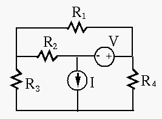

Next: About this document ...
Problem Database
- Find all node voltages in the circuit with respect to the bottom node as
ground, where
 ,
,  ,
,  ,
,  ,
,
,
,  . Use both node voltage and loop current methods.
. Use both node voltage and loop current methods.


Solution:
- Node voltage: Let the bottom node be ground and other node
voltages be
 (left),
(left),  (middle) and
(middle) and  (right).
(right).
Solving this we get:
Alternatively, use the figure on the right and assume between the current
and voltage sources is grounded  , then
, then  , and denote previous
ground by
, and denote previous
ground by  . We have
. We have
Solving this we get:
Treating as ground, we get:
- Loop current: Let the loop currents be
 (top),
(top),  (left)
and
(left)
and  (right).
(right).
Solving this we get:
Alternatively, use the figure on the right and assume loop currents
through voltage source  , through current source and through
. We have
, through current source and through
. We have
Solving this we get:
Current through  is
is
 , current through
, current through  is
is
 .
.
- Find all node voltages in the circuit, where
 ,
,
 ,
,  , ,
, ,  ,
,
 , . Use both node voltage and loop current methods.
, . Use both node voltage and loop current methods.
Solution:
- Node voltage:
Solving this we get:
- Loop current:
- Find all node voltages in the circuit, where
,
,
, ,
,
, . Use both node voltage and loop current methods.
Solution:
- Node voltage:
- Loop current:
Next: About this document ...
Ruye Wang
2008-02-05